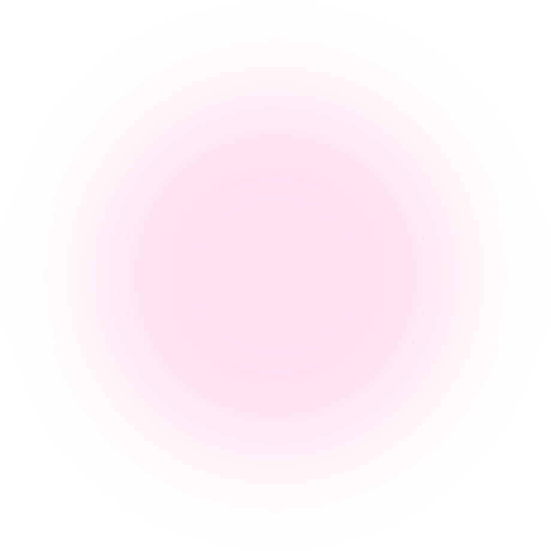
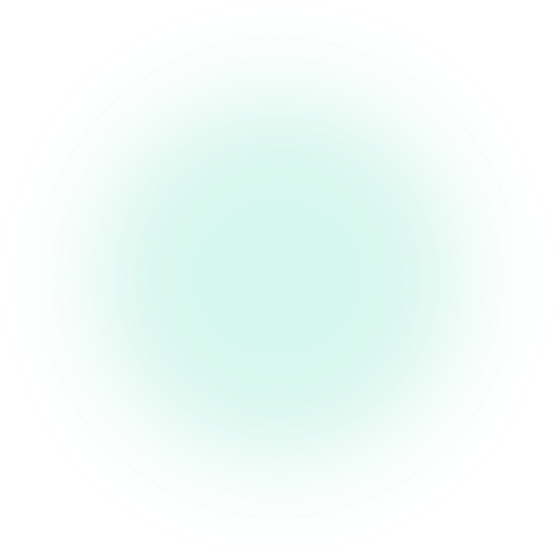
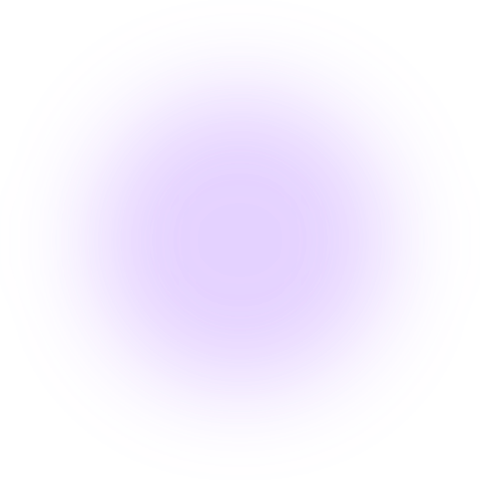

🕹️ Controles
- WASD mover a enzima
- ESPAÇO pegar / entregar moléculas
- 1 · 2 · 3 usar power-ups (NAD⁺, Mg²⁺…)
- CLIQUE / J atirar antioxidantes no chefão
- ENTER continuar na loja
- TOQUE joystick + botão de ação no celular



Controle uma enzima e corra dentro da célula cumprindo pedidos de moléculas antes que o tempo acabe — no ritmo frenético dos jogos de cozinha. Monte proteínas no ribossomo, gere ATP na mitocôndria, segure temperatura e pH no laboratório e derrote os radicais livres.
Cada fase ensina um processo real da bioquímica.
Leia os códons do RNAm (AUG, UUU, GGC…) e entregue os aminoácidos certos para montar as proteínas pedidas. Combos multiplicam os pontos.
📚 Síntese de proteínas ⭐ ⭐ ☆ 1 a 3 estrelasLeve o piruvato ao Ciclo de Krebs e mantenha o fluxo de energia: Glicólise → Krebs → Cadeia respiratória → ATP.
📚 Respiração celular ⭐ ⭐ ☆ 1 a 3 estrelasControle temperatura e pH para a enzima não desnaturar. Ideal: 35–40 °C e pH perto de 7.
📚 Enzimas ⭐ ⭐ ☆ 1 a 3 estrelasEnfrente o Radical Livre Supremo usando antioxidantes: Vitamina C e Vitamina E neutralizam o elétron desemparelhado.
📚 Antioxidantes ⭐ ⭐ ☆ 1 a 3 estrelasDADO CIENTÍFICO
O códon AUG, além de codificar a metionina, é o sinal de início da tradução: é por ele que o ribossomo começa a montar quase todas as proteínas.
Aprenda mais em Biomoléculas → Proteínas e Ácidos Nucleicos.